2026 Solar Profit Strategy
補助金・税制・J-クレジット・余剰電力活用まで。J・システムが、設計から運用・収益化まで一気通貫で伴走します。
専門知識は不要です。電気料金の検針票だけでも、おおよその試算ができます。※要確認
Check List
必要な情報がまだ揃っていなくても、現状の確認からご相談いただけます。
1つでも当てはまる方は、まず現状の整理からご相談ください。
無料で相談する →Why Now / 2026
排出量取引制度の本格始動、GHGプロトコルの改訂、CBAMなど、CO₂は環境課題から財務課題へ。これからは、つくった電気と環境価値をどう運用するかが、企業競争力を左右します。
Total Support
J・システムは、設備販売だけで終わりません。企業ごとの状況に合わせ、導入ハードルを下げ、太陽光の価値を最大限に引き出します。
複雑な補助金制度や、初期投資ゼロのPPAモデルを調査。書類作成まで支援し、導入時の負担を最小限に抑えます。
中小企業経営強化税制などの適用要件を確認し、申請書類の作成まで支援。税務手続きの負担を軽減します。
削減したCO₂をJ-クレジットとして価値化。創出から市場での販売まで一貫支援し、新たな収益につなげます。
余剰電力の高値買取事業者とのマッチングや、特定施設への電力融通など、最適な運用プランを提案します。
Model Case
屋根の面積、電力の使い方、業種によって効果は変わります。代表的なケースで、どの程度の規模感になるかをご覧ください。
※ 上記は一定の前提条件に基づく試算例です。実際の効果は屋根条件、電力契約、稼働状況、適用制度により異なります。
【制作メモ】数値はJ・システム様よりご提供ください。実案件ベース／標準前提の試算例のいずれかを選択いただきます。
御社の場合はどうなるか、実データをもとに試算します。
無料シミュレーションを依頼する →From Cost to Profit
つくる、最適に使う、環境価値に変える、収益化する。導入後まで見据えた運用設計で、太陽光の価値を一度きりのコスト削減で終わらせません。
購入する電力を直接削減します。
蓄電池や設備と組み合わせ、余剰電力を有効活用。
削減したCO₂を証書として資産化します。
創出したクレジットを取引し、収益を最大化。
自社での収益化まで含めて、運用設計をご提案します。
自社での収益化を相談する →J-System Original Technology
太陽光だけを導入して終わらせない。蓄電・建物保全・空調制御までを一体で考え、長く価値を生むエネルギー基盤をつくります。
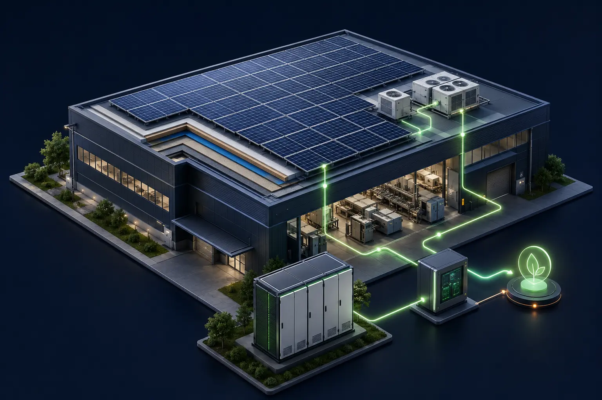
発電・蓄電・省エネ・建物保全を、ひとつの設計に。
ENERGY CONTROL
発電と消費の物理的な関係を明確に。時間単位の電力運用にも対応しやすい構成へ。夜間の需要は蓄電池とEMSでカバーします。
アイグリーズ ／ 空調制御によるダブル省エネ
発電量を増やすのではなく、空調のピーク電力と使用電力量の両方を抑える独自の制御技術。基本料金と従量料金を同時に下げます。
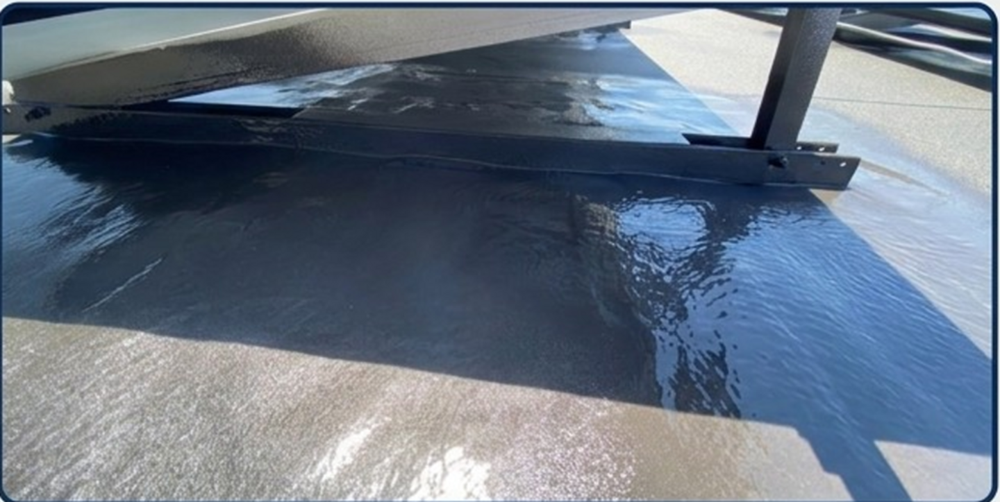
屋根と設備の「寿命ギャップ」を埋める
パネルは20年、屋根は10年。運用途中の屋根改修はパネル脱着の追加費用に直結します。ポリウレア樹脂で屋根防水と架台を一体化し、漏水リスクを抑えます。
Works
工場・倉庫・事業所を中心に、屋根の状態と電力の使い方に合わせた設計・施工を行ってきました。
【制作メモ】写真・実績データのご提供をお願いします。本セクションは今後のCMS（施工実績の自社更新機能）の出力先として設計しており、CMS実装時にそのまま差し替え可能な構造です。
Support Flow
まずは現状を整理する無料シミュレーションから。専門的な判断や手続きは、J・システムが伴走します。
現場・デマンド調査。屋根形状、設備状況、時間帯別の電力データを確認します。
最適システム提案。自家消費率や設備構成を設計し、投資効果を試算します。
財務計画・制度適用。補助金、税制、PPAを含めた導入計画を具体化します。
運用・収益化支援。余剰電力と環境価値を活かし、導入後も伴走します。
FAQ
ご相談前に多くいただく質問をまとめました。ここにない内容も、お気軽にお問い合わせください。
Company
| 会社名 | J・システム株式会社 |
|---|---|
| 所在地 | ◯◯◯◯◯◯ |
| 創業 | ◯◯◯◯年 |
| 代表者 | ◯◯ ◯◯ |
| 事業内容 | 産業用・住宅用太陽光発電システムの設計・施工／蓄電池・EMS導入／空調制御システム「Ai-Glies」／屋根防水・ポリウレア施工／補助金・税制申請支援／J-クレジット創出支援 |
| 従業員数 | ◯◯名 |
| 対応エリア | ◯◯ |
※ 記載事項はJ・システム様よりご提供いただき確定します。
Supplementary Guide
申し込みもダウンロードも不要です。気になる章をクリックすると、その場で全文をお読みいただけます。印刷して社内資料としてお使いいただくこともできます。
Free Simulation
まずは御社の屋根と電力データから、導入効果と活用できる支援策を整理します。簡単なご相談からでも構いません。
OVERVIEW
国内制度、国際取引、排出量算定の変化が、企業経営に直接関わり始めています。
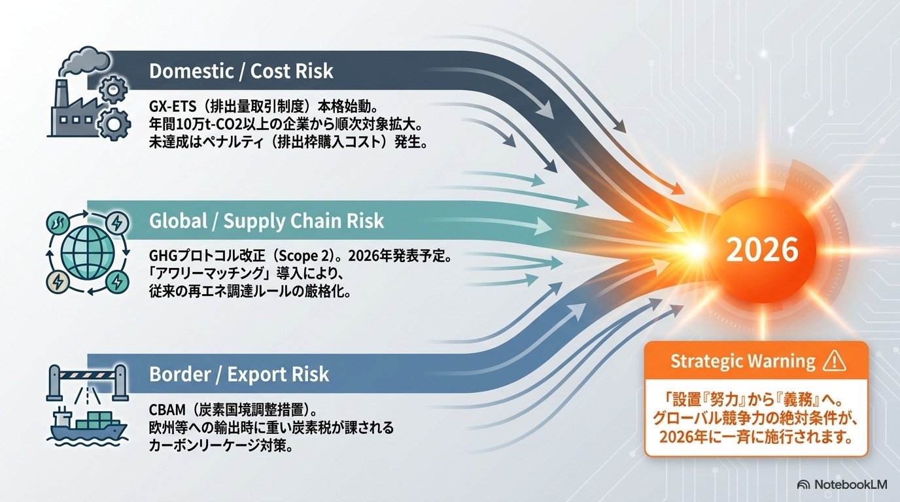
2026年度から本格稼働。対象企業には、排出目標や実績、排出枠の適切な管理が求められます。
2026年1月から本格適用。対象品目をEUへ輸出する際、製品に含まれる排出量データが重要になります。
Scope 2を含む基準の見直しが進んでおり、再エネ調達の証拠やデータの信頼性が重視されています。
影響は制度上の義務だけではありません。取引先からの情報要請や調達条件、投資判断にも及びます。
※ 適用対象・時期・最終要件は各制度の公式情報をご確認ください。
GX-ETS
国内の排出量取引制度が本格稼働し、排出量データの把握・説明が求められます。
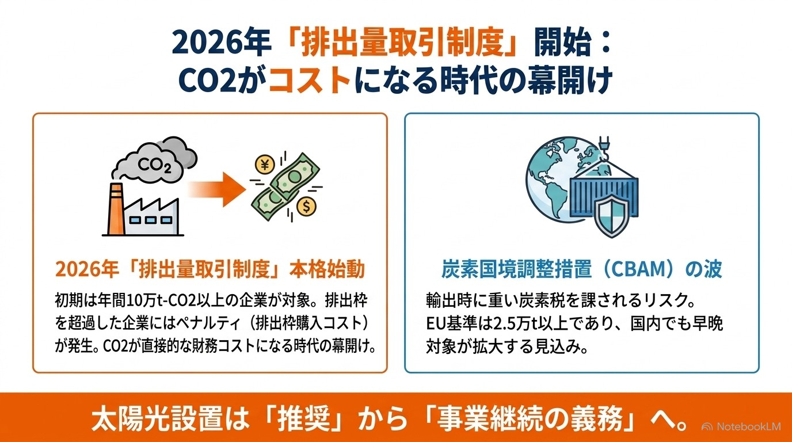
2026年度に本格稼働。3年度平均で年10万t-CO₂以上を排出する企業が対象です。
割当量と実績との差を管理し、不足する場合は排出枠の調達等が必要になります。
排出枠を超過した場合、その差分を埋めるためのコストが発生します。CO₂が直接的な財務コストになるという点が、これまでの環境対策との決定的な違いです。
CBAM
EUの炭素国境調整措置（CBAM）は、対象品目の輸入に排出量データの申告を求めます。
2026年本格適用。年50t超の対象品目を輸入するEU事業者に、認可・申告等を求めます。
EU向け対象製品では、製品に含まれる排出量データの提示が必要になります。
直接の名宛人はEU側の輸入事業者ですが、データを提供するのは製造元である日本企業です。サプライチェーン全体で排出量を説明できる体制が求められます。
GHG PROTOCOL / SCOPE 2
Scope 2の改定では、電力を「いつ・どこで」使い、どの電源と対応させるかが検討されています。
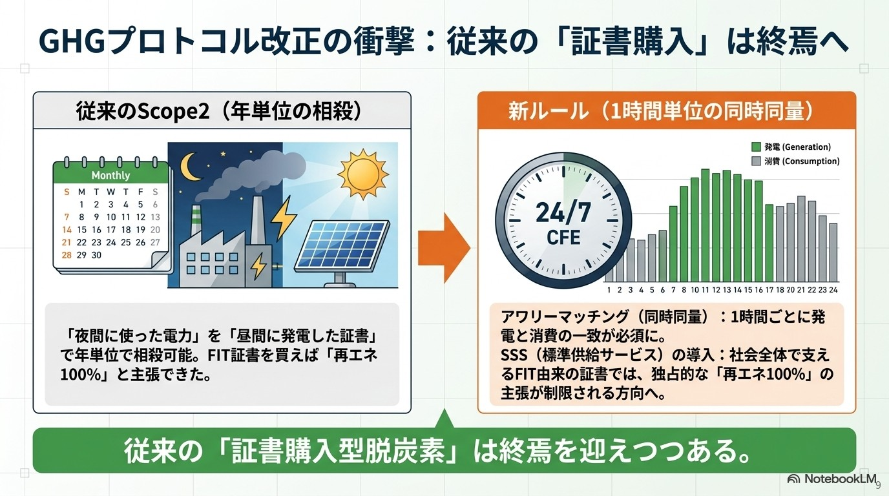
「夜間に使った電力」を「昼間に発電した証書」で年単位で相殺できました。FIT証書を購入すれば「再エネ100%」と主張できた状態です。
1時間ごとに、使った電力と同時間帯のクリーン電力を対応させる方向へ（アワリーマッチング）。
この変化が意味するのは、「証書を買う」だけの脱炭素が通用しにくくなるということです。発電と消費が同じ場所・同じ時間で結びつくオンサイト自家消費は、この観点で説明しやすい構成になります。
※ Scope 2の改定内容は検討中です。最終基準の確定後、適用時期と要件をご確認ください。
DATA & RECORDS
再エネ設備は、導入するだけでは不十分です。発電・消費実績を説明できる運用体制まで整えます。
使用量、発電量、時間帯を把握し、削減効果を説明できるようにします。
電力、環境価値、余剰電力が誰に帰属するのかを、契約時に明確にします。
申請や算定、監査に必要な計測データと書類を継続して管理します。
証書やクレジットの利用可否は、契約内容、算定ルール、二重計上の有無を確認して判断します。J・システムは、この運用体制の構築まで支援します。
参照：経済産業省｜排出量取引制度／GHG Protocol｜Scope 2 Guidance・Update Process／European Commission｜CBAM
本内容は2026年8月時点で公開されている情報をもとに作成しています。
御社の場合にどう影響するか、個別に整理してご説明します。
この内容について相談する →SELF-CONSUMPTION
まずは、自社の電力需要と発電する時間帯がどれだけ重なるかを確認します。
発電 → 自家消費 → 蓄電・設備利用・売電
購入する電力量を減らし、電力価格の変動に備えます。
自社で再エネを利用し、排出量削減の実績につなげます。
蓄電池と組み合わせ、停電時に必要な電力を確保する方法を検討できます。
余剰電力や環境価値を将来活用できる余地を残します。
VALUE REVERSAL
売電単価だけでなく、購入電力の削減額を軸に、太陽光の投資効果を見直します。
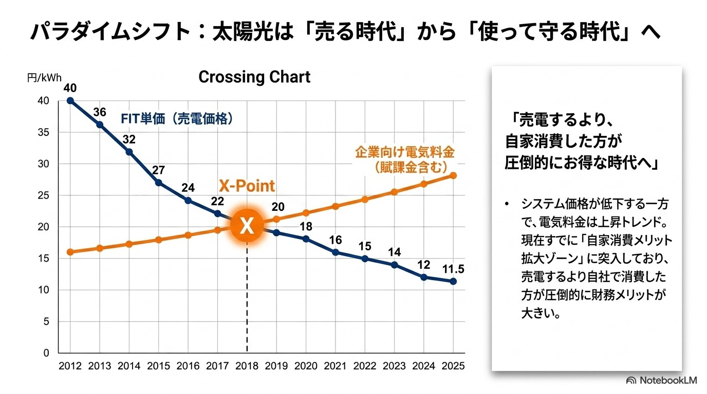
システム価格が低下する一方で、電気料金は上昇トレンドにあります。現在すでに交差点（X-Point）を越えており、売電するより自社で消費した方が財務メリットが大きい局面に入っています。
自家消費率が高いほど、電気代削減効果を得やすくなります。そのため設計段階では、屋根に載る最大容量ではなく「自社の需要とどれだけ重なるか」を基準に容量を決めることが重要です。
※ FIT単価は代表例です。電気料金・経済性は契約、地域、時期、設備条件によって異なります。
COMPARISON
自己所有、オンサイトPPA、リースを、同じ条件で比較します。
| 評価軸 | 自己所有 | オンサイトPPA | リース |
|---|---|---|---|
| 初期費用 | 必要 | 原則不要 | 月額で平準化 |
| 設備所有 | 自社 | PPA事業者 | 契約先 |
| 運用・保守 | 自社または委託 | 事業者が担う | 契約条件による |
| メリット | 削減効果を自社で得やすい | 初期投資を抑えやすい | 資金計画を立てやすい |
| 注意点 | 回収期間・保守体制 | 契約期間・屋根条件・信用力 | 会計処理・中途解約条件 |
※ PPA・リースの条件は事業者・設備・契約期間により異なります。
また、調達手法という観点では、新しい算定ルールの下でどの方式が説明しやすいかも判断材料になります。
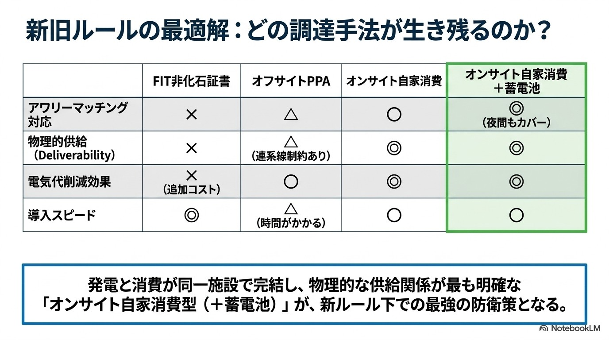
御社の電力の使い方に合う方式を、データをもとにご提案します。
この内容について相談する →INTEGRATED DESIGN
太陽光、蓄電池、空調、建物を一体で設計し、長く使えるエネルギー設備をつくります。
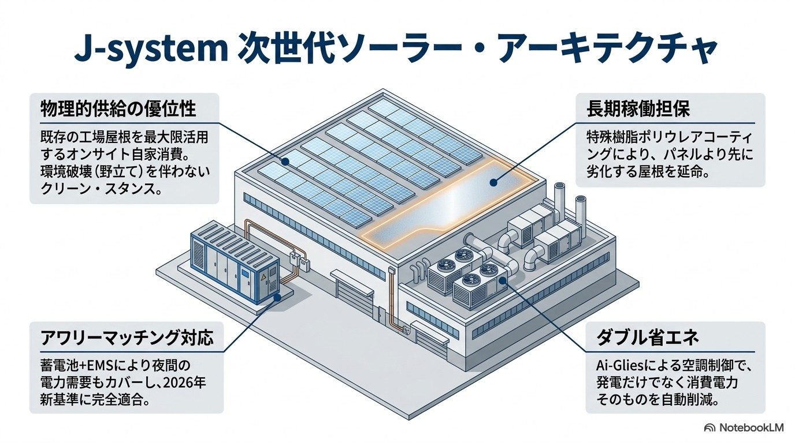
発電量と電力需要を時間帯ごとに把握し、ピーク抑制と非常時の電力確保を考えます。蓄電池とEMSにより夜間の需要もカバーします。
屋根と設備の更新時期を見通し、途中での移設や再施工をできるだけ避けます。
既存の工場屋根を最大限活用するオンサイト自家消費は、野立てのような環境改変を伴わない点でも説明しやすい構成です。
空調制御は、発電量を増やすものではありません。電力のピークや使用量を抑えるための選択肢です。
ORIGINAL TECHNOLOGY
太陽光発電とJ・システム独自の空調制御技術「Ai-Glies（アイグリーズ）」を組み合わせ、購入電力とピーク需要を抑えます。
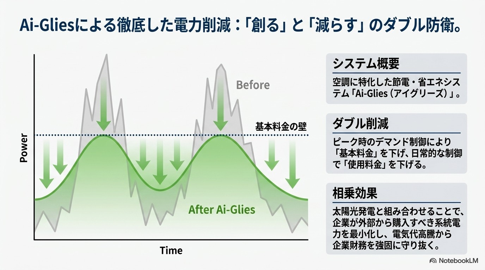
昼間に使う電力の一部を自社でつくり、購入電力を減らします。
空調に特化した節電・省エネシステム。使用量とピーク需要をきめ細かく抑えます。
基本料金と使用料金の両面から、電力コストの負担抑制を目指します。
Ai-Gliesは空調運転を最適化し、太陽光と組み合わせて購入電力の削減を目指すJ・システム独自の技術です。発電量を増やすアプローチとは異なり、消費電力そのものに働きかけるため、太陽光と組み合わせることで相乗効果が生まれます。
LIFE CYCLE
運用期間中に屋根改修が必要になると、パネルの移設や再施工に追加費用がかかります。
防水・耐荷重 ／ 既存設備の更新計画 ／ 将来の増設余地 ／ 施工・保守動線
パネルが20年稼働しても、土台となる屋根が10年で劣化・漏水すれば、投資回収計画（ROI）は成立しません。導入前の見通しが、長期の収支を左右します。
ORIGINAL CONSTRUCTION
J・システム独自の施工設計で、屋根防水と太陽光架台を一体化し、長期運用を支えます。
運用途中の屋根改修は、パネルの取り外し・再施工費につながります。
イソシアネートとアミンの化学反応によって生成される樹脂化合物。高い防水・防食性、耐衝撃性、速乾性を持ちます。
効果：架台と屋根を完全に一体化し、漏水リスクを極限まで排除。設備と屋根の「20年以上の長期共存」を実現します。
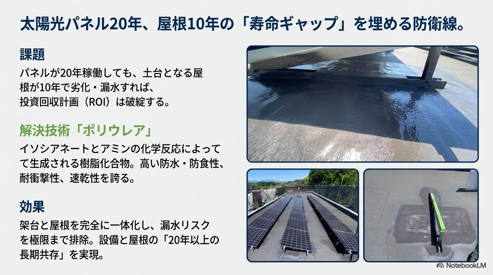
適用可否・耐用年数は、屋根の状態、下地、製品仕様、施工条件を確認して判断します。
SITE SURVEY
発電量だけでなく、建物の状態、電力需要、今後の事業計画まで確認します。
30分ごとの使用量・季節変動
契約電力・単価
屋根構造・築年数
日陰・方位・利用可能面積
空調・生産の稼働時間
BCP・増設・拠点計画
これらの情報をもとに、設備容量、蓄電池、制御方法、投資回収をまとめてシミュレーションします。データの取得方法についても、ご相談後に個別にご案内します。
御社の屋根と設備の状況に合わせて、構成をご提案します。
この内容について相談する →LONG-TERM BALANCE
得られる効果と将来かかる費用を、同じ期間・同じ前提で比べます。
年間キャッシュフロー ／ 回収期間 ／ 累積効果 ／ 契約終了後の資産・権利
導入・運用費用には、保守や将来の更新費用も含めて比較することが重要です。「初期費用がいくらか」ではなく「20年でいくら残るか」が判断軸になります。
SUBSIDY / TAX / PPA
制度ありきではなく、自社の事業計画に合う方法を組み合わせます。
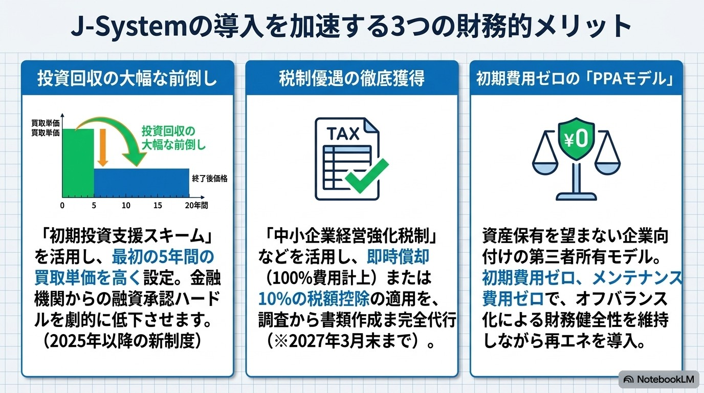
対象設備、公募期間、着手可能な時期を確認します。公募期間に合わせた進行が必要なため、早めの検討が有利です。
中小企業経営強化税制などを活用し、即時償却または税額控除の適用を検討。企業要件、計画認定、設備の取得時期を確認します。
設備を自社資産として保有。回収期間、金利、保守費用を含めて判断します。
資産保有を望まない企業向けの第三者所有モデル。契約期間、単価、屋根条件、中途解約条件を確認します。
J・システムは、適用要件の調査から申請書類の作成まで代行します。「対象になるか分からない」段階からご相談いただけます。
※ 適用できる制度や期限は、企業、設備、取得時期、認定手続きによって異なります。投資判断や申請、会計・税務処理にあたっては、最新の公募要領や専門家の確認をお願いします。
J-CREDIT
自家消費を基本に、クレジット化、蓄電、設備利用、売電の可能性を確認します。
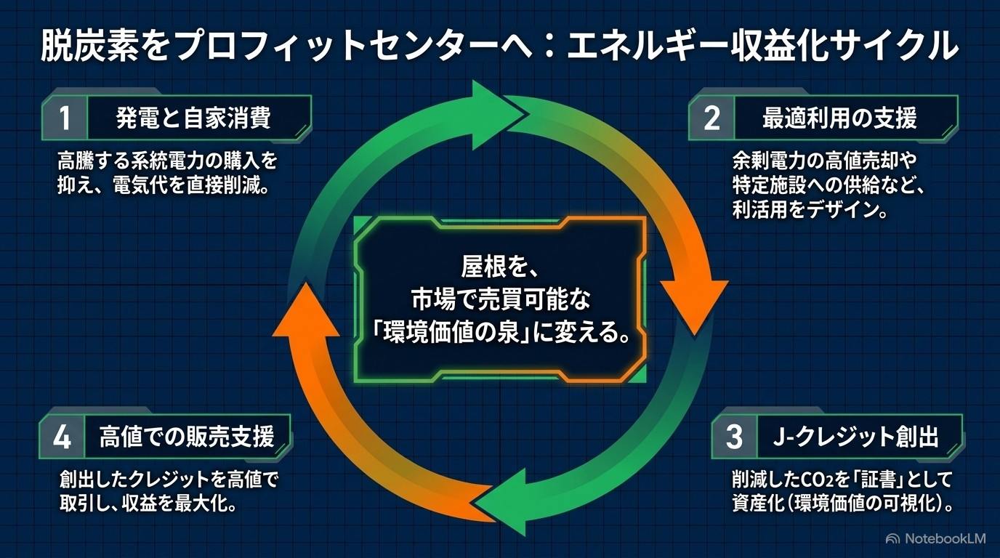
J-クレジット｜CO₂削減量をクレジットに変える
対象となる方法論、追加性、二重計上の防止などを確認する必要があります。J・システムは創出から市場での販売支援まで一貫して対応します。
ENERGY OPTIMIZE
自家消費でまかないきれない電力を、どう活かすかを設計します。
昼間の余剰を蓄え、夜間や停電時に使用します。
特定施設への電力融通や社用EVの充電などに活用します。
余剰電力の高値買取事業者とのマッチングを支援します。
価格だけでなく、契約条件、時間帯、設備上の制約も比べて判断します。
参照：資源エネルギー庁｜再生可能エネルギー情報／環境省｜令和8年度 脱炭素化支援事業／中小企業庁｜中小企業経営強化税制・中小企業投資促進税制／経済産業省｜J-クレジット制度／J-クレジット制度 公式サイト
本内容は2026年8月時点で公開されている情報をもとに作成しています。
御社が使える可能性のある制度を、調査してご案内します。
この内容について相談する →